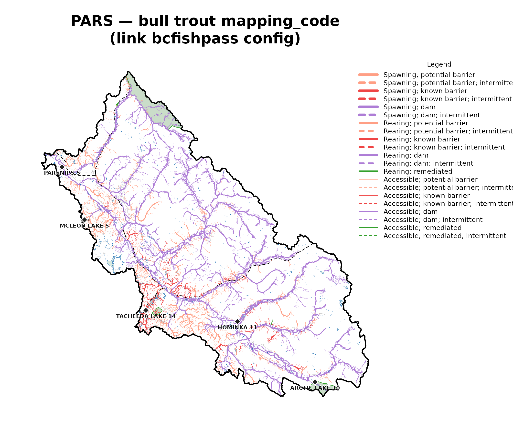
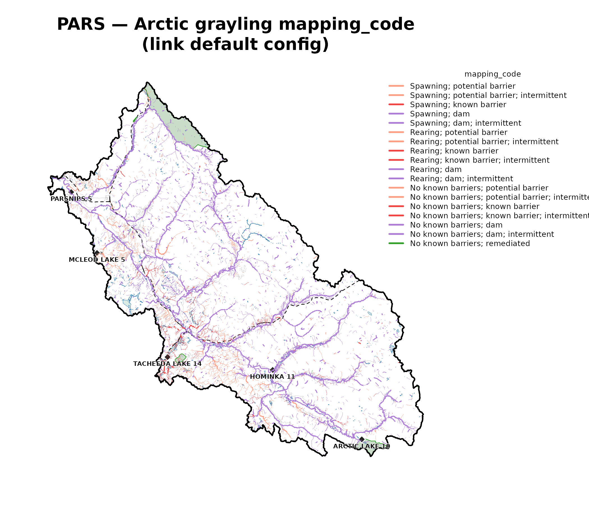

Bull trout and Arctic grayling: habitat and connectivity classification for the Parsnip River Watershed Group
Source:vignettes/pars-habitat-connectivity.Rmd
pars-habitat-connectivity.RmdFor any stream in a watershed, fisheries managers want to know three
things: can a fish get there, is it good habitat, and what — if anything
— blocks the way. This vignette runs that analysis end to end for the
Parsnip River Watershed Group (PARS, ~5,600 km²,
north-eastern BC).
link models the entire stream network of a watershed
group one segment at a time, and for each species works out:
- Access — can the fish reach the segment, or is the route downstream likely too steep (gradient), or cut off by a barrier such as a dam, waterfall, or perched culvert?
- Habitat — if it is reachable, is the segment likely large enough (channel width) and its gradient gentle enough for the modelled species to use it as spawning habitat, rearing habitat, or simply passable water with neither?
- Barriers — the most significant obstacle downstream: a dam, a known barrier that has been assessed in the field (a road culvert, weir, etc.), a modelled crossing (predicted from road–stream intersections but not yet field-checked), or one that has since been remediated (fixed).
It also flags reaches that are intermittent
(seasonally dry). bcfishpass condenses
that whole per-segment verdict into one compact label it calls a
mapping_code — for example SPAWN;DAM, spawning
habitat with a dam downstream. link reproduces those same
labels, and the maps below colour and weight every stream by them.
The vignette does two things. First, it shows link’s
bcfishpass configuration reproducing
bcfishpass’s per-segment classification for bull trout (BT)
— a parity check against the established tool. Second, it shows
link extending the same method to a
species bcfishpass does not yet model in the Peace: Arctic grayling
(GR).
The Parsnip River Watershed Group sits between Prince George and
Mackenzie, BC. The Parsnip flows north into the southern arm of
Williston Reservoir, joining the Peace River system; from there the
drainage runs Peace → Slave → Mackenzie, ultimately discharging to the
Arctic Ocean via the Mackenzie Delta. Of the species in
link’s bcfishpass configuration, bull trout
(BT) is the only one present, so the parity check below is
a single-species comparison. Both bull trout and Arctic grayling
(GR) are cold-water species whose distributions the model
resolves through gradient, channel-width, and access thresholds. Bull
trout — provincially blue-listed and a COSEWIC species of special
concern in the Western Arctic population — spawn as adfluvial migrants
in cold, low-gradient tributaries such as the Misinchinka and Anzac.
Arctic grayling, at the southern edge of their range in the Williston
watershed, hold to cooler, larger (fourth-order and up) clear-water
reaches and spawn over fine gravels.
link is layered on the canonical fwapg /
bcfishpass / bcfishobs
stack from Simon Norris (Hillcrest Geographics). What link
adds is a configuration-driven re-expression of the same modelling: we
can experiment with different configurations for species bcfishpass
already models, and extend to species it does not — here, Arctic
grayling — while staying byte-checkable against the upstream
reference.
Modelling parameters
A mapping_code is a per-segment, per-species label that
bcfishpass computes over the BC Freshwater Atlas (FWA) stream network —
it is not part of the FWA itself. Producing it means first re-cutting
the FWA streams into shorter segments wherever a fish’s prospects change
— at gradient transitions, falls, dams, modelled and assessed crossings,
and habitat thresholds — then giving each resulting segment its access,
spawning, and rearing classification. link reproduces that
segmentation and those classifications. Access is gated by a per-species
maximum gradient; spawning and rearing are then gated
by their own maximum gradients and a minimum channel
width. The values in force for this run are below.
| species | configuration | access grad max | spawn grad max | rear grad max | spawn CW min (m) | rear CW min (m) |
|---|---|---|---|---|---|---|
| BT | bcfishpass (parity) | 0.25 | 0.0549 | 0.1049 | 2 | 1.5 |
| GR | default (link extension) | 0.15 | 0.0249 | 0.0349 | 4 | 1.5 |
Cached inputs
The model run and the bcfishpass comparison both require a populated
PostgreSQL/PostGIS database and a bcfishpass snapshot — neither of which
exists on the documentation-build CI. So they run once,
locally, in data-raw/wsg_vignette_data.R (generic
— set aoi and re-run for any watershed group), which caches
its outputs to inst/vignette-data/. This vignette only
loads those artifacts; it never touches a database at build
time. Direct downloads from the repo (open in QGIS or any GDAL-aware
tool):
-
pars.gpkg— vectors:aoi(WSG boundary),streams(per-segmentmapping_code_btfrom the bcfishpass config +mapping_code_grfrom the default config),waterbodies(lakes + rivers + manmade),named_streams, and basemapping context layersreserves,parks,roads,railways -
pars_parity.rds— per-speciesmapping_codeparity tibble -
pars_accessible.rds— bull-trout accessible / spawning / rearing habitat (km), link’s roll-up vs the local bcfishpass snapshot
The model run itself — shown here for reference, not executed at
build time — is one call per configuration. The Peace study-area run
that produced the state this vignette reads modelled the drainage
most-downstream-watershed-group first, so a segment’s
downstream-dam (;DAM) tokens, which can live in an adjacent
watershed group, resolve correctly. A standalone single-group re-run
would diverge on exactly those cross-group segments, so the data-gen
script reads the persisted study-area state rather than recomputing
it.
conn <- lnk_db_conn()
cfg_bcfp <- lnk_config("bcfishpass") # persists to schema `fresh`
loaded <- lnk_load_overrides(cfg_bcfp)
lnk_pipeline_run(conn, aoi = "PARS", cfg = cfg_bcfp, loaded = loaded,
mapping_code = TRUE)
cfg_default <- lnk_config("default") # persists to `fresh_default`
cfg_default$pipeline$schema <- "fresh_default"
loaded_d <- lnk_load_overrides(cfg_default)
lnk_pipeline_run(conn, aoi = "PARS", cfg = cfg_default, loaded = loaded_d,
mapping_code = TRUE)Reproducing bcfishpass (parity)
lnk_compare_mapping_code() compares link’s
per-segment mapping_code against the local bcfishpass
snapshot, segment by segment. The comparison restricts itself to species
that are actually active in the watershed group — which, for the reasons
above, is bull trout alone in PARS.
| WSG | species | segments | match % |
|---|---|---|---|
| PARS | BT | 43600 | 98.91 |
link reproduces 98.91% of bcfishpass’s per-segment
bull-trout mapping_code across 43,600 segments — consistent
with the 99.66% study-area median established for the Peace.
Accessible habitat (km)
Per-segment mapping_code agreement is one lens; the
habitat totals are another.
lnk_rollup_wsg() sums, per species, the stream length a
fish can reach (accessible) and the lengths modelled as spawning and
rearing — link’s own model output, produced whether or not there is
anything to compare against. Below, those totals sit next to the same
quantities from the bcfishpass habitat model. Because link
breaks streams at every gradient frontier, a reach never straddles the
accessibility boundary, so the accessible total matches bcfishpass to a
rounding error.
| metric | link km | bcfishpass km | diff % |
|---|---|---|---|
| accessible | 6822.47 | 6822.88 | -0.01 |
| spawning | 1683.38 | 1667.92 | 0.93 |
| rearing | 2575.06 | 2588.91 | -0.53 |
link models 6,822.5 km of accessible bull-trout habitat in PARS against bcfishpass’s 6,822.9 km — a -0.01% difference. Spawning and rearing agree within the habitat model’s tolerance.

Bull-trout per-segment mapping_code across the Parsnip River Watershed Group, link’s bcfishpass configuration. Stream colours come straight from the bcfishpass symbology registry, so they match a bcfishpass QGIS project exactly. Context: lakes/rivers/manmade waterbodies (light blue), provincial parks (green), First Nations reserves (grey polygon + black diamond + label), resource roads (grey), railways (black dashed); the heavy black line is the watershed-group boundary.
Arctic grayling — a link extension
bcfishpass does not yet model Arctic grayling, so there is nothing to
compare against; this is net-new output. link’s
default configuration carries GR in its
species dimensions, and the same six-phase pipeline that produced the
bull-trout parity above produces a per-segment mapping_code
for grayling. The map below is rendered with the same
bcfishpass symbology registry — the token vocabulary
(ACCESS/SPAWN/REAR ×
NONE/MODELLED/ASSESSED/DAM/…)
is species-agnostic, so one colour lookup styles every species
consistently.

Arctic grayling per-segment mapping_code across the Parsnip River Watershed Group, link’s default configuration — a species bcfishpass does not yet model. Same symbology registry and context layers as the bull-trout map, so the two are directly comparable. The grayling network is smaller than bull trout’s (19,232 vs 38,622 classified segments), but every grayling segment is net-new output relative to bcfishpass, and 257 of them carry no bull-trout classification at all.
Maps — detail comparison
The full-watershed views compress a lot of network. Cropping to a sub-reach puts bull trout and grayling side by side at full resolution. Grayling’s modelled network is the smaller of the two overall, but 257 segments carry a grayling classification with no bull-trout classification — the reaches where the extension is doing genuinely new work.
![South-east corner of the Parsnip River Watershed Group at full resolution — the headwaters near the continental divide: bull trout (left, link bcfishpass config) and Arctic grayling (right, link default config), same extent, same symbology. Grey background streams are the full modelled network, so the coloured overlay shows where each species' classification reaches. Context: waterbodies (light blue), parks (green), reserves (grey + diamond), roads (grey), railways (black dashed), named streams (italic blue labels).](pars-habitat-connectivity_files/figure-html/map-detail-1.png)
South-east corner of the Parsnip River Watershed Group at full resolution — the headwaters near the continental divide: bull trout (left, link bcfishpass config) and Arctic grayling (right, link default config), same extent, same symbology. Grey background streams are the full modelled network, so the coloured overlay shows where each species’ classification reaches. Context: waterbodies (light blue), parks (green), reserves (grey + diamond), roads (grey), railways (black dashed), named streams (italic blue labels).